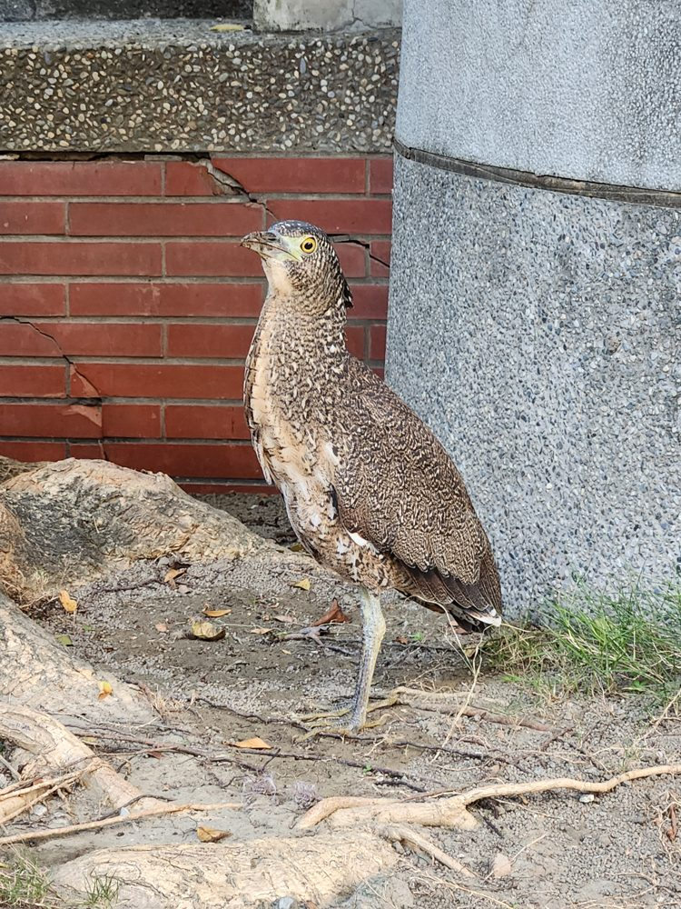

Images · generative drawing
What p5.brush can draw: every built-in brush, plus the stroke, fill, hatch, vector-field and custom-brush operations. All tiles are drawn live by version 3.0.0, and each one shows the code that made it. At the end, a heron drawn from a photo, and a bench of 3.0 against 2.2.
Loading p5.brush…
Each tile draws a straight line, a spline and a heavier weight with the same brush. The list comes from brush.box() at runtime.
set, pick, stroke, strokeWeight and noStroke control the stroke. Pressure on spline points, and manual strokes, shape each mark.
Fill simulates watercolor: soft edges, bleed and texture. Wash is the fast solid alternative. Opacity runs 0–255.
Hatching lays parallel strokes inside any shape. Mass fills a shape the way a hand would with a dry medium, best with crayon or pastel.
A field bends every stroke that follows it. Each tile draws the same set of flow lines inside one named field. brush.listFields() returns the names.
Shapes take stroke, fill and hatch. line, flowLine, spline and arc are stroke only.
brush.add(name, params) defines a brush. Types are default, spray, marker, custom (draw the tip) and image (a photo as the tip, not shown here).
A drawing made from a photo of a night heron, in three passes. Loose watercolour dabs lay in the colour. Pencil strokes then build the tone, denser where the photo is darker and turned to follow the local grain of the image. Ink ticks go last, on the strongest edges. Every mark is placed by reading the photo, and none is traced by hand. The one hand-made choice is a soft oval of focus around the bird: away from it the marks thin out and the colour fades toward the paper, the way a sketch leaves its edges unfinished.

p5.brush 3.0.0 (28 October 2026) moved every brush onto the GPU and says strokes and hatching are about 10× faster, mass() about 15×, many small fills about 5× and washes about 3.5× (measured by its author on an Apple M4). This bench loads 2.2.3 and 3.0.0 side by side and runs the same seeded work through both on your machine. Each test draws into a 900 × 1200 canvas, waits for the GPU to finish, and reports the median of five runs. The two versions take turns.
| Test | Work | 2.2.3 | 3.0.0 | Speed-up |
|---|
Two things this bench turned up. First, 3.0 batches strokes until the brush, colour or weight changes, and each change costs about the same in both versions. The heron's first plan gave every stroke its own colour, and the speed-up vanished. Rounding colours to a few dozen pencils and drawing each pencil's strokes together brings it back, which is what the grouped and ungrouped rows compare. Second, scaleBrushes(n) multiplies the current scale and doesn't set it. Call it once per page: calling it before every drawing grows the brushes until the marks vanish.
Condensed from the official p5.brush llms.txt. Shown here for the standalone build. In the p5 build, use p5's own transforms, seeding and frame handling.
| Group | Calls |
|---|---|
| Setup | createCanvas · scaleBrushes(n) · angleMode · seed · noiseSeed · clear · render() (required) · load(target) |
| Transforms | push · pop · translate · rotate · scale |
| Stroke | set(name, color, weight) · pick(name) · stroke · strokeWeight · noStroke |
| Fill | fill(color, opacity) · noFill · fillBleed(strength, "in"|"out") · fillTexture(texture, border, scatter?) · wash · noWash |
| Hatch | hatch(dist, angle, {rand, continuous, gradient}) · noHatch · hatchStyle(name, color, weight) · hatchArray |
| Mass | mass(brush, color, {precision, strength, gradient, outline}) · noMass · massArray |
| Fields | field(name) · noField · wiggle(n) · listFields · refreshField(t) · addField(name, fn) |
| Lines | line · flowLine(x, y, len, dir) · spline(points, curvature) · beginStroke / move / endStroke |
| Shapes | rect(x,y,w,h,"corner"|"center") · circle(x,y,r,irregularity) · arc · polygon · beginShape / vertex / endShape |
| Management | box() · add(name, params) · clip([x1,y1,x2,y2]) · noClip |
| Classes | Polygon (draw, fill, wash, hatch, mass, intersect) · Plot · Position |